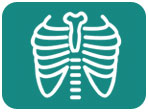

Diagnostic Radiology
.jpeg)
.jpeg)
- the message:
- The diagnostic radiology department is committed to providing the highest level of quality in medical diagnosis through the latest equipment and advanced technology.
- Overview:
- Oral and maxillofacial surgeryOur department at Al Salam International Hospital is proud to offer a full range of imaging services to hospital and hospital admissions. We have advanced digital photography facilities from top quality manufacturers in the world.
lastic surgery
- The department's physicians and technicians seek excellence in patient care and are committed to providing state-of-the-art technology to diagnose and treat our patients.
- We provide the following medical imaging services:
- Imaging multiple parts of the body through two modern magnetic resonance devices
- CT scan using a modern CT device
- Imaging and advanced digital endoscopy for all parts of the body with the service of measuring bone density
- Sonar with 3-D color and triple-shot service
- We would like to mention:
- In addition to providing imaging services and advanced interventional procedures, we understand that accurate reporting of the physician in a timely manner is of paramount importance.
.jpeg)